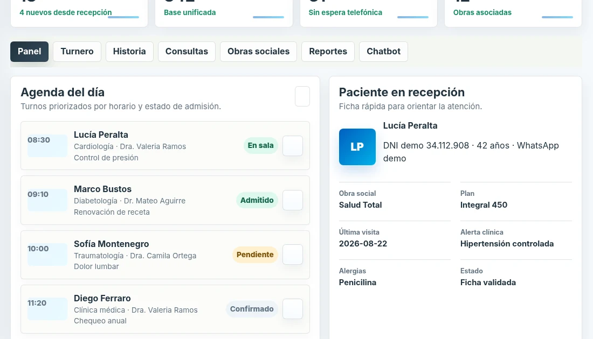

2026WEB PROFESIONAL / SC
SC Soluciones Conectadas
Sitio profesional y demos por rubro que transforman necesidades operativas en experiencias navegables y soluciones de automatización.
Aprendizaje: Convertir necesidades de cada sector en demos navegables facilita explicar soluciones complejas.
HTMLCSSJavaScriptDemos B2B